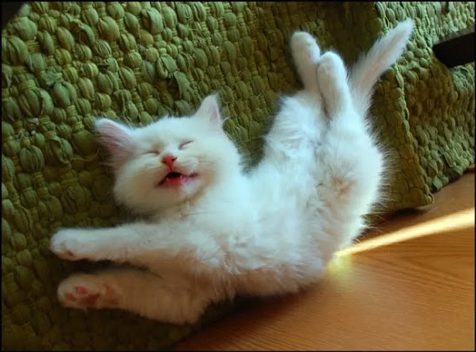
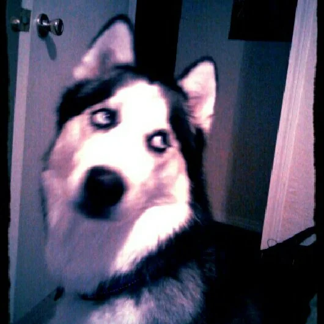
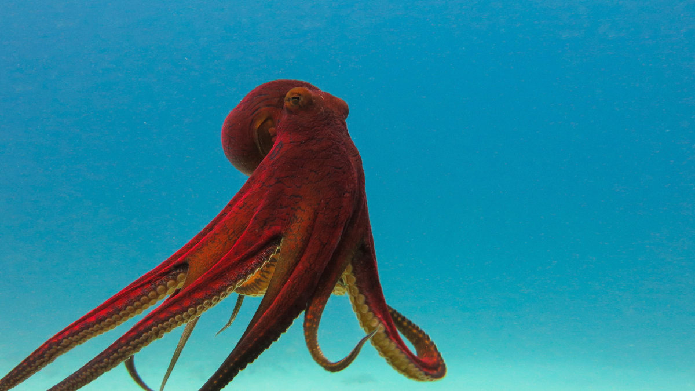
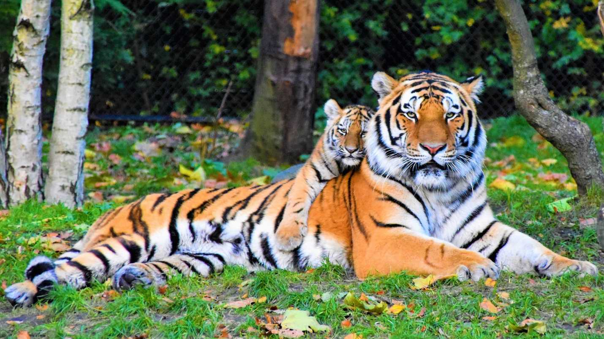

-

Kittens
I really enjoy living with kittens. I've helped raise and foster about 5 litters of kittens and it's always so much fun.
-

Huskys
I read somewhere that husky's are considered one of the most intelligent dog breeds. I'm not sure how true that is because I don't know how to measure an animal's intelligence, but I have been around husky's before and I can say that they have alot of personality
-

Octopus (they're very intelligent)
Octopus are really cool becuase their DNA is one of the most unique in the world. They have hundreds of genes that don't appear in any other animals. They are also considered to be extremely intelligent. If I could speak with any sea animal, they'd be my number 1 pick
-

Tigers
I believe tigers to be extemely beautiful. It may be a bit cliche to some, but I find them quite beautiful. As I've grown older I've learned to have a lot of sympathy for tigers since their beauty is constantly sought out by poachers and they are often held in zoos.